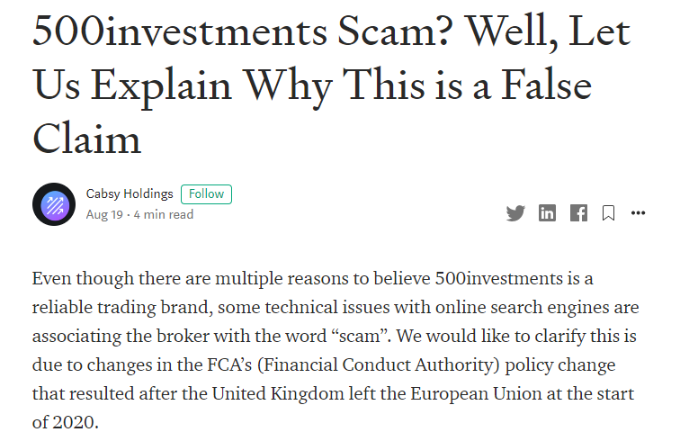
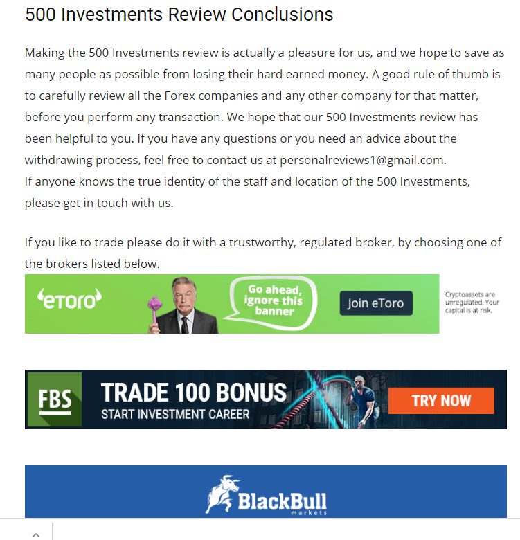
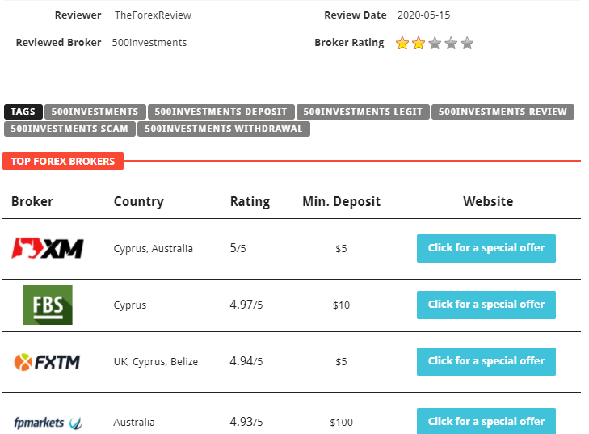
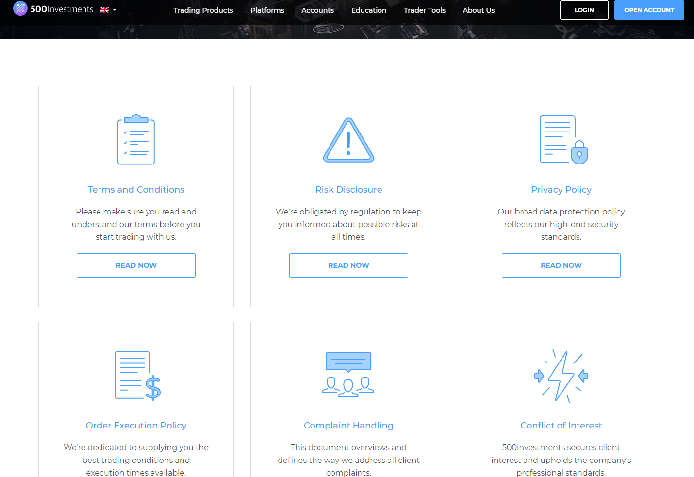

<div class="content">
	
		<div class="container flex">
			<div class="text editable">
<h1 id="500investments-scam-or-not-">500Investments – Scam or Not?</h1>
<p>There has been a lot of online debate on whether 500Investments brand is a scam and considering the information is in many ways vague or conflicting, we would like to make everything clear once and for all. We decided to investigate the subject in order to clearly find if 500Investments operates for the benefit of its client? Or not? </p>
<p>We decided to go and explore all of the online available materials on the brand, and we came up with some really interesting conclusions on how the providers of “objective reviews” operate, in this report we will reveal how some of them actually cooperates with some brands in order to “assassinate” competitors, and to falsely frame some brands as “scam” or “scam brokers” without any factual basis. </p>
<p>Keep in mind that the ultimate goal of this report is to expose some of the conflicts of interests from the retail trading world, as we use the case of 500Investments “scam” as an ultimate example. If you will become more aware of these issues, all the decisions made with regards to any given broker will be made based on verifiable facts and not just on opinions provided by subjective websites.</p>
<h2 id="how-scam-labeling-websites-operate-">How Scam-labeling websites operate?</h2>
<p>One of the key things you need to understand is that each website needs revenue to continue operating. That is completely fine because behind every online domain stands a person of a firm that needs resources to function.</p>
<p>We don’t have any issues with websites raising revenues, without altering the objectivity of the content provided, but it is a problem when websites are labeling brokers as scams, when in fact, they work with competing brokers and make commissions for each new customer.</p>
<p>As you can easily notice on any website exposing online broker scams, there are plenty of banners, most of them linking to certain brokers or services related to the financial industry, that are highlighted as “reliable brands”.</p>
<p>Even though that might be the case sometimes, it is important to take the information with a grain of salt, considering the website might have an interest in making visitors choose a specific broker.</p>
<p>What we want to highlight is that a website generating revenue from certain brokers will be incentivized to praise its partners, while demonizing other competing brands. Is that the case all the time? Absolutely not, which is why we recommend that you always check the broker’s website and go through all the information provided. Based on it, you have the ability to assess if it&#39;s reliable or not.</p>
<p><strong>The fact that the UK has left the EU doesn’t make all EU brokers, including 500Investments, a scam...</strong></p>
<p>As highlighted in an <a href="https://medium.com/@cabsyholdings.info/500investments-scam-well-let-us-explain-why-this-is-a-false-claim-6d3ad10fcece">article published by “Cabsy holdings”</a>, there was confusion created after the UK left the European Union. More specifically, 500Investments was indexed as a scam, just because not that the country left the Common Block, financial regulation might be different. The Financial Conduct Authority (FCA), the main UK regulator, changes its policy and as a result, some brokerage houses, with headquarters outside the UK, were labeled as “not regulated in the UK”.</p>
<div class="image"></div>
<p>That does not mean all brokers operating outside the country are scams. This is just a formal issue, deriving also from the Google indexing algorithm. As we will explore in the next paragraph, multiple websites are ranking high for the keyword “500Investments scam”, which is why we want to make a brief analysis of them, as well.</p>
<h2 id="a-brief-analysis-of-websites-claiming-500investments-is-a-scam">A brief analysis of websites claiming 500Investments is a scam</h2>
<p>We start off with ScamWatcher, a website claiming “Your safety, our job”. There are multiple pieces of content that’s questionable there, but we will focus solely on the 500Investments Review. After stating “in this review, we will describe why your funds are not safe with 500Investments”, before providing any solid proof, we are hit with an advertisement. “Scammed by this broker? Get your money back”, and then a free consultation is offered.</p>
<div class="image"></div>
<p>Basically, the review on the website covers less than a few hundred words, while at the end of it, there is a contact form to get a free consultation. In reality, this review is only a cover-up to promote the services of “Wealth Recovery” experts, and ScamWatcher most probably gets a commission for each customer they bring. There is limited information on the services provided by 500Investments, and the article falsely claims that 500Investments does not offer enough details about its offer.</p>
<p>The second website we want to talk about is personal-reviews.com. Same as the previous, it provides little or no relevant information on why 500Investments is not reliable, but on the other hand, it explicitly encourages viewers to leave bad reviews on other sites. The relevancy of the “insights” provided is questionable since the article does not analyze at all the key features of the 500Investments trading offer.</p>
<div class="image"></div>
<p>It falsely states how the broker operates (“call people to persuade them to make the initial minimum deposit”, “offer deals that sound too good to be true”, etc.), without any solid background. As we have seen in many other reviews in <a href="https://www.forexfraud.com/forex-broker-reviews/500investments/">reliable sources</a>,  500Investments are fully transparent with their services and trading benefits, and we were able to find all the details about them in their <a href="https://www.500investments.com/legal/">terms &amp; conditions section</a>. Also, the 500Investments website is packed with information and customer representatives stand ready to assist, even if you don’t have an account, but want to find out more about their services, we contacted them, and you should also do this.</p>
<p>Thirdly, we would like to talk about theforexreview.com, a reviews-oriented website notifying readers to be aware of 500Investments, but at the same time recommending other competing brokers, before even starting to write anything about 500Investments. The reasons supporting the “scam” theory are ridiculous.</p>
<div class="image"></div>
<p>The article states that the broker does not provide access to MetaTrader 4, but is that a reason to label a broker as a scam? At the same time, the article mentions that “the terminals itself appears quite fake”. This confirms that there was no platform testing before writing the review, making it irrelevant. The 500Investments platform is not “fake” but an optimized and well-functioning trading software, currently used by a multitude of customers. We can’t understand the reason why it was highlighted that way by theforexreview.com, but our advice, for any reviews sites out there, it’s immoral to rate without actually testing the functionality of a platform. </p>
<h2 id="websites-providing-good-reviews-for-500investments">Websites providing good reviews for 500Investments</h2>
<p>Alongside the websites labeling 500Investments as a scam, we can also find <a href="https://tokenhell.com/500investments/">some other pages</a> that give a more balanced view of the services provided. The readers are introduced to the services offered by the broker, without any call to action. Also, some clearly state that the final call will depend on each reader and more information should be read on the 500Investments website. </p>
<p>As compared to the previously mentioned websites, these articles are not featuring the services provided by other brands and at the same time, explore the trading benefits, pros/cons, associated with 500Investments. When looking for a broker review, we believe it is critical to search for content providing actual data and not covered marketing for other competing entities.</p>
<p>Objectively, it’s clear that the vast majority of the <a href="https://cryptofrontline.com/500investments-review/">reviews of 500Investmetns</a> are positive, and that’s the case for both brokers’ reviews websites as well as user generated reviews platforms such as <a href="https://uk.trustpilot.com/review/www.500investments.com">trustpilot</a>. </p>
<p>The bottom line is that, when choosing a broker to work with, it would be important to look for legit and objective feedback. Not all websites are interested in informing the audience, but some are quite focused on increasing their revenue, even though that would mean to ruin the image of competing brokers. To be sure about a broker, the simplest way to do that is by contacting a customer representative. He/she will provide all the information you need and based on that, you can later assess if that’s the brand you want to work with.</p>
<h2 id="why-500investments-is-not-a-scam-">Why 500Investments is not a scam?</h2>
<p>We’ve spent most of the article uncovering some of the reasons why many websites are not honest when talking about 500Investments and now we want to talk about some of the details they’ve intentionally ignored. First and foremost, the minimum deposit required to open a small account with the brand is $250. Usually, scams are demanding much bigger deposits and once it is made, the customer can’t get in contact with anybody.</p>
<p>500Investments allows small deposits via multiple reputable payment methods, and at the same time, provides 24/5 customer service via email and phone. You can get in contact with a representative any time during the working days and get all the information you want.</p>
<p>Transparency is ensured, because all the details regarding the assets supported, account types, payment methods, trading benefits, educational resources, and others, are being provided on the website. Each page comes with multiple data and for more insights, you can check the terms &amp; conditions, as well.</p>
<p>The platforms available at 500Investments have proven to be efficient and both the web version and mobile apps are constantly being used by our customers. If you want to test the trading software, we are offering demo accounts and you will be able to see how they perform, without making any deposit.</p>
<div class="image"></div>	
<h2 id="the-bottom-line">The bottom line</h2>
<p>If you’ve made it to the end of our article, we hope that everything is clear now and you understand how other websites are putting their interests first, without caring if other companies get hurt in the process. Finding trusted and objective broker reviews in the online world is a real challenge, which is why, in case you want to know more about 500Investments, it would be better to contact the customer support, ask all the questions you want, and only then decide on whether it is the right broker or not. </p>
</div></div>
</div>
